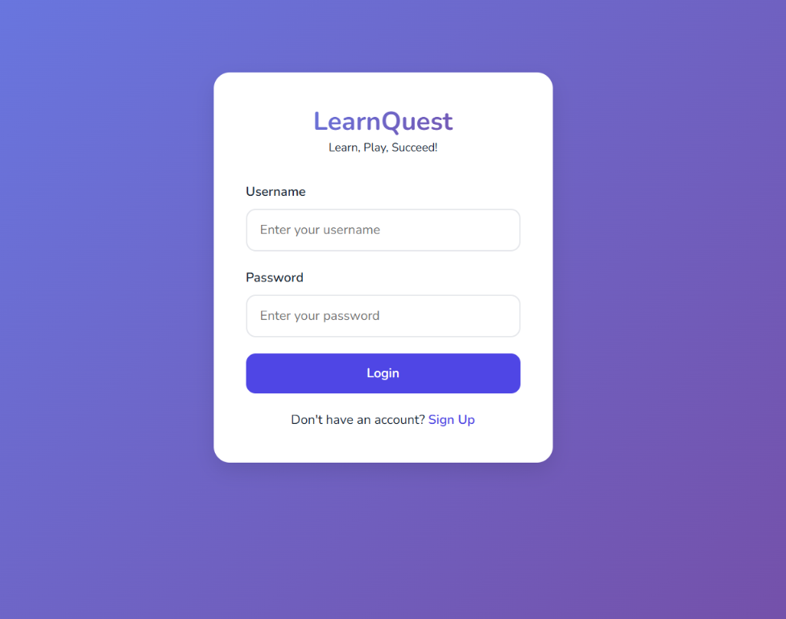

01 / Website
SVD Eco Services
A clear, credible website for an industrial recovery and waste-management business.
Tech stackHTML · CSS · JavaScript · Responsive UI
View live project ↗Selected work
Explore the websites, social content and brand stories we create to help ambitious businesses grow.
A clear, credible website for an industrial recovery and waste-management business.

An inventory management experience designed for fast, practical day-to-day control.
A fashion-focused digital storefront built to make collections easy to discover.
A welcoming education website that brings the school's information and identity together.
A focused digital presence for an education brand with a modern, approachable feel.

A playful learning platform concept that makes progress feel engaging and rewarding.
A clean product-led website designed around clarity, trust and conversion.
A bold product experience that gives a digital-first business a sharper identity.
Short-form social content created to stop the scroll and build brand recall.
Visual content shaped for consistent, recognisable social communication.
A campaign-ready social piece designed to communicate quickly and memorably.
A brand-led film built to express personality, positioning and ambition.
A visual identity story that turns a brand's values into a strong first impression.